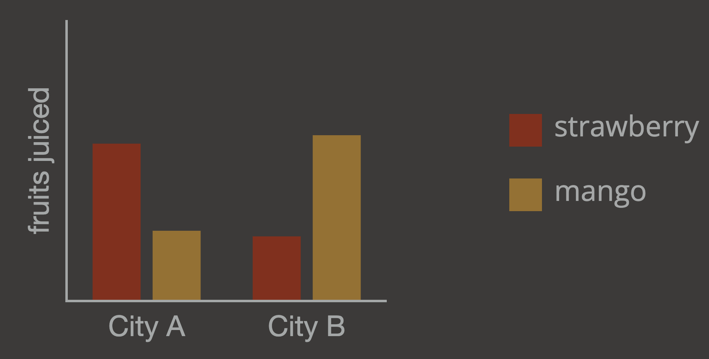

<!DOCTYPE html>
<html lang="en">
<meta http-equiv="Content-Type" content="text/html; charset=UTF-8" />
<head>
  <title>Schloss Lab Experiment</title>
  <!-- Load in the jspsych tools, plugins,and layout -->
  <script src="https://ajax.googleapis.com/ajax/libs/jquery/3.1.0/jquery.min.js" type="text/javascript"></script>
  <script src="js/jspsych.js"></script>
  <script src="js/plugin-instructions.js"></script>
  <script src="js/plugin-congruence-graph.js"></script>
  <script src="js/plugin-html-button-response.js"></script>
  <script src="js/plugin-html-keyboard-response.js"></script>
  <script src="data/graph_inference_sets_2.js"  type="text/javascript"></script>
  <script src="js/plugin-fullscreen.js"  type="text/javascript"></script>
  <script src="serverComm.js"  type="text/javascript"></script>
  <script src="js/plugin-survey-text.js"></script>
  <script src="js/plugin-survey-multi-choice.js"></script>
  
  <link rel="stylesheet" href="./jspsych.css"></link>
  <script type="text/javascript" src="https://cdn.jsdelivr.net/npm/chart.js@3.9.1/dist/chart.min.js"></script>
  <script type="text/javascript" src="https://cdn.jsdelivr.net/npm/lodash@4.17.21/lodash.min.js"></script>
  
  
  
  <link href='https://fonts.googleapis.com/css?family=Avenir:400,700' rel='stylesheet' type='text/css'>
  
  <style id="textStyle"> 
    /* .text {font-size: 35px; font-weight: bold; color:getAdjusted;} */
  </style>
</head>


<body style="background-color: rgba(61, 58, 57);color:black">
  
  
  
  
  <script type="text/javascript">
    console.log('V3.1')
    
    
    // function to adjust the colors for the particular monitor the experiment is being conducted on.
    function getAdjustedColors(index){
      
      constantR = 1.6138;
      slopeR =  0.4454;
      
      constantG = 1.3877;
      slopeG = 0.4479
      
      constantB = 1.8521;
      slopeB = 0.487;
      
      //Monitor gun chromaticiites (x and y are from CIE 1931 xyY space)
      xR  = 0.667
      yR  = 0.308  
      
      xG = 0.242   
      yG = 0.694  
      
      xB = 0.151  
      yB = 0.051  
      
      /*----------------------------------Part 2: ENTER DESIRED COLOR COORDINATES IN xyY ------------------------------------ */
      
      numColors = 72 //currenlty includes background color
      
      set_xorig =[0.3127,
      0.178127952,
      0,
      0.217259441,
      0,
      0.187154646,
      0.190626855,
      0,
      0.254948033,
      0.27871405,
      0,
      0.223973536,
      0.208097372,
      0,
      0,
      0.286437008,
      0,
      0.302721486,
      0,
      0,
      0,
      0,
      0.253320314,
      0.269381382,
      0.274732132,
      0,
      0.312726615,
      0.312726615,
      0,
      0.312726615,
      0,
      0,
      0.37352856,
      0,
      0,
      0.491807479,
      0,
      0,
      0.307500484,
      0,
      0,
      0,
      0,
      0.381789828,
      0.363546139,
      0.357345875,
      0.521739081,
      0,
      0.410317963,
      0.508735995,
      0,
      0.297357222,
      0,
      0,
      0.367525229,
      0,
      0,
      0.436706206,
      0,
      0,
      0,
      0,
      0.563152094,
      0.617925005,
      0.300234084,
      0,
      0,
      0.393809673,
      0,
      0,
      0.432436699,
      0.491961735,
      0]
      
      set_xadj = [0,.011,0,0,0,0,0,0,0,0,0,0,0,0,0,0,0,0,0,0,0,0,0,0,0,0,0,0,0,0,0,0,0,0,0,0,0,0,0,0,0,0,0,0,0,0,0,0,0,0,0,0,0,0,0,0,0,0,0,0,0,0,0,0,0,0,0,0,0,0,0,-0.011,0] //here is where you can update/adjust the values for x
      
      set_yorig = [.329,
      0.140208271,
      0,
      0.135877952,
      0,
      0.191572195,
      0.129802383,
      0,
      0.122842042,
      0.176351714,
      0,
      0.283993067,
      0.214149788,
      0,
      0,
      0.198839274,
      0,
      0.262198854,
      0,
      0,
      0,
      0,
      0.35107769,
      0.3452343,
      0.343266914,
      0,
      0.32902313,
      0.32902313,
      0,
      0.32902313,
      0,
      0,
      0.305342332,
      0,
      0,
      0.256663273,
      0,
      0,
      0.524345125,
      0,
      0,
      0,
      0,
      0.407278998,
      0.386344218,
      0.379278911,
      0.376558153,
      0,
      0.362143466,
      0.333407591,
      0,
      0.577311772,
      0,
      0,
      0.525080036,
      0,
      0,
      0.472379363,
      0,
      0,
      0,
      0,
      0.373452007,
      0.329629953,
      0.564257072,
      0,
      0,
      0.521232317,
      0,
      0,
      0.467135312,
      0.442499176,
      0]
      
      
      set_yadj = [0,.01,0,0,0,0,0,0,0,0,0,0.02,0,0,0,0,0,0.02,0,0,0,0,0,0,0.02,0,0,0,0,0.018,0,0,0,0,0,0,0,0,.01,0,0,0,0,0,0,0,0,0,0,0,0,0,0,0,0,0,0,0,0,0,0,0,0,0,0,0,0,0,0,0,0,0,0] //here is where you can update/adjust the values for y
      
      //Array used to specify lightness (CIE Y * 116, which is the maximum cd/m2 for our monitor)
      set_Yorig = [10,
      18.41865185,
      0,
      18.41865185,
      0,
      18.41865185,
      4.415476752,
      0,
      4.415476752,
      18.41865185,
      0,
      48.27810437,
      4.415476752,
      0,
      0,
      4.415476752,
      0,
      48.27810437,
      0,
      0,
      0,
      0,
      18.41865185,
      48.27810437,
      72.06527533,
      0,
      4.415476752,
      18.41865185,
      0,
      100,
      0,
      0,
      18.41865185,
      0,
      0,
      18.41865185,
      0,
      0,
      4.415476752,
      0,
      0,
      0,
      0,
      18.41865185,
      48.27810437,
      72.06527533,
      4.415476752,
      0,
      48.27810437,
      18.41865185,
      0,
      18.41865185,
      0,
      0,
      18.41865185,
      0,
      0,
      18.41865185,
      0,
      0,
      0,
      0,
      18.41865185,
      18.41865185,
      72.06527533,
      0,
      0,
      48.27810437,
      0,
      0,
      72.06527533,
      48.27810437,
      0]
      
      set_Yadj = [0,-1.0,0,-1.0,0,0,0,0,0,0,0,2.5,0,0,0,0,0,2.5,0,0,0,0,0,1.01,1.63,0,0,0,0,1.0,0,0,0,0,0,0,0,0,0,0,0,0,0,0,1.3,2.19,0,0,0,0,0,0,0,0,0,0,0,0,0,0,0,0,0,0,0,0,0,1.3,0,0,1.48,1.1,0] //here is where you can update/adjust the values for Y
      
      
      var set_x = []
      var set_y = []
      var set_Y = []
      for(var j = 0; j < numColors; j++) {
        set_x.push(set_xorig[j] + set_xadj[j])
        set_y.push(set_yorig[j] + set_yadj[j])
        set_Y.push(set_Yorig[j] + set_Yadj[j])
      }
      
      // console.log(set_Y)
      // console.log(set_Y[1])
      
      var Rval = new Array(numColors).fill(0)
      var Gval = new Array(numColors).fill(0)
      var Bval = new Array(numColors).fill(0)
      
      
      
      /*----------------------------------Part 3: ACQUIRE RGB COORDINATES FOR YOUR MONITOR ------------------------------------ */
      
      //Turns the xyY values into RGB values and stors them in Rval, Gval and Bval
      
      var colors = new Array
      
      // console.log("set_Y:", set_Y)
      // console.log("set_x:", set_x)
      // console.log("set_y:", set_y)
      
      for (var i = 0; i<numColors; i++){
        
        Oldx = set_x[i]
        Oldy = set_y[i]
        
        step1 = (Oldx - xB) * (yR - yB) - (Oldy - yB) * (xR - xB);
        step2 = (xG - xB) * (yR - yB) - (yG - yB) * (xR - xB);     
        step3 = step1 / step2;
        step4 = ((Oldx - xB) - step3 * (xG - xB)) / (xR - xB);
        step5 = 1.0 - step3 - step4;
        step6 = step4 * yR + step3 * yG + step5 * yB;
        
        GunPercentR = (step4 * yR) / step6;
        GunPercentG = (step3 * yG) / step6;
        GunPercentB = 1.0 - GunPercentR - GunPercentG;
        
        // This makes the chromaticity gray if it is outside the gammut of the monitor
        if (GunPercentR < 0.0){ GunPercentR = 0.0;}// print((i)+"\n");}
        if (GunPercentG < 0.0){ GunPercentG = 0.0;}// print((i)+"\n");}
        if (GunPercentB < 0.0){ GunPercentB = 0.0;}// print((i)+"\n");}
        
        
        var R = Math.pow(10.0,constantR)*(Math.pow((GunPercentR*set_Y[i]),slopeR))
        var G = Math.pow(10.0,constantG)*(Math.pow((GunPercentG*set_Y[i]),slopeG))
        var B = Math.pow(10.0,constantB)*(Math.pow((GunPercentB*set_Y[i]),slopeB))
        
        if(R < 0 || R > 255 || G < 0 || G > 255 || B < 0 || B > 255){
          R = 0;
          G = 0;
          B = 0;
        }
        
        
        Rval[i] = Math.round(R)
        Gval[i] = Math.round(G)
        Bval[i] = Math.round(B)
        
      }
      
      // console.log(Rval)
      // console.log(Gval)
      // console.log(Bval) 
      
      return `rgba(${Rval[index]}, ${Gval[index]}, ${Bval[index]})`
      
    }
    
    var textStyle = document.getElementById("textStyle");
    textStyle.innerHTML = `.text {line-height:150%; font-size: 25px; color:${getAdjustedColors(29)}`;
    
    
    
    function saveData(data_object) {
      var xhr = new XMLHttpRequest();
      xhr.open('POST', 'php/save_data.php');
      xhr.setRequestHeader('Content-Type', 'application/json');
      xhr.onload = function() {
        if(xhr.status == 200){
          var response = JSON.parse(JSON.stringify(xhr.responseText));
          console.log(response);
          
        }
      };
      xhr.send(data_object.json());
    }
    
    //Remove (from jspsych data) the first line of data (consent form), which has already been written to the database & create a new variable with the rest of the data to save
    function finalSave (){
      var data_to_save = jsPsych.data.get()
      console.log('saving');
      saveData(data_to_save);
    }
    
    
    
    
    
    
    
    
    var jsPsychOuter = initJsPsych({
      use_webaudio: false,
      override_safe_mode: true,
      // on_finish: function () {finalSave()}
      
    });
    var loadchecks =[];
    
    
    
    var jsPsych = initJsPsych({
      use_webaudio: false,
      override_safe_mode: true,
      on_finish: function () {finalSave()}
      
    });
    var trials =[];
    
    
    window.onbeforeunload = function() {
      return "If you leave or refresh the page, you will not be able to finish the experiment. Are you sure you want to leave?"; 
    };
    
    var subjectID = jsPsych.randomization.randomID(10);
    var urlvar = jsPsych.data.urlVariables();
    var workerID = urlvar.id
    
    
    
    
    function registration(){
      serverComm.register_subject(workerID, //workerID,
      function(){ // If the subject has a unique id that has not been recorded, the experiment will load/begin.
        register_success(); //calls the entire experiment to begin 
      },
      function(){ // If ID has already been registered, give error message. 
        document.querySelector('body').innerHTML = '<p>Our records indicate that you have already started this experiment. Due to the nature of the experiment, restarting is not permitted.</p><p>If you believe this message is in error, you can contact the researchers at kmukherjee2@wisc.edu.</p><p>Our apologies for the trouble.</p>';
      },
      function(){ // If there is a technical error. 
        document.querySelector('body').innerHTML = '<p>Our apologies. There was a technical error on our end while loading the experiment.</p><p>You will not be able to complete the experiment. You can contact the researchers at kmukherjee2@wisc.edu with any questions.</p><p> Our apologies for the trouble.</p>';
      })  }     
      
      
      
      
      
      
      
      /// create a dictionary of dictionaries called concept_sets with keys 0-15 and values of those keys being empty lists
      
      var categoriesDict = {
        0:['fruits grown'],
        1:['fruits sold'],
        2:['picnics'],
        3:['animals caught'],
        4:['natural disasters'],
        5:['vegetables harvested'],
        6:['fruits eaten'],
        7:['hours spent'],
        8:['vegetables cooked'],
        9:['plays performed'],
        10:['animals housed'],
        11:['square miles covered'],
        12:['books read'],
        13:['disasters encountered'],
        14:['hours recorded'],
        15:['paintings displayed']
      }
      
      var conceptSetDict = {
        0:['apple','peach'],
        1:['banana','celery'],
        2:['beach','field'],
        3:['bear','fish'],
        4:['blizzard','drought'],
        5:['carrot','corn'],
        6:['cherry','grape'],
        7:['eating','sleeping'],
        8:['eggplant','mushroom'],
        9:['evil','peace'],
        10:['frog','lion'],
        11:['glacial ice','ocean water'],
        12:['justice','love'],
        13:['sandstorm','wildfire'],
        14:['shade','sunshine'],
        15:['sky','sunset'],
      }
      
      
      var questions ={
        0:['Which city grows more '],
        1:['Which city sold more '],
        2:['Which city’s population picnics at more '],
        3:['Which city catches more '],
        4:['Which city experiences more '],
        5:['Which city harvests more '],
        6:['Which city eats more '],
        7:['Which city spends more time '],
        8:['Which city cooks more '],
        9:['Which city performs more plays about '],
        10:['Which city’s zoos house more '],
        11:['Which city is covered by more square miles of '],
        12:['Which city reads more books about '],
        13:['Which city encounters more '],
        14:['Which city records more hours of '],
        15:['Which city’s museum displays more paintings of ']
      }
      
      var queryOptions ={
        0:['apples','peaches'],
        1:['bananas','celery'],
        2:['beaches','fields'],
        3:['bears','fish'],
        4:['blizzards','droughts'],
        5:['carrots','corn'],
        6:['cherries','grapes'],
        7:['eating','sleeping'],
        8:['eggplant','mushrooms'],
        9:['evil','peace'],
        10:['frogs','lions'],
        11:['glacial ice','ocean water'],
        12:['justice','love'],
        13:['sandstorms','wildfires'],
        14:['shade','sunshine'],
        15:['skies','sunsets'],
      }
      
      var cityList = {
        0:['A','B'],
        1:['C','D'],
        2:['E','F'],
        3:['G','H'],
        4:['I','J'],
        5:['K','L'],
        6:['M','N'],
        7:['O','P'],
        8:['Q','R'],
        9:['S','T'],
        10:['U','V'],
        11:['W','X'],
        12:['Y','Z'],
        13:['α','β'],
        14:['γ','δ'],
        15:['ε','ζ'],
        
      }
      
      //make a list of lists where the entries of the list are the same as the values in conceptSets
      var conceptSets = Object.values(conceptSetDict);
      
      
      // write a function to create a latin square of length 16
      function latinSquare(length) {
        var square = [];
        for (var i = 0; i < length; i++) {
          square[i] = [];
          for (var j = 0; j < length; j++) {
            square[i][j] = (i + j) % length;
          }
        }
        return square;
      }
      
      latinSquareArray = latinSquare(16);
      
      
      
      
      
      
      var booth_trial = {
        type: jsPsychHtmlKeyboardResponse,
        stimulus: '<p>Experimenter:'+
          '<p>First, please add subjectID to the end of the experiment URL & re-load.'+
            "<p>Second, which Booth is this: type the letter A or B to continue.",
              choices: ['a','b'],
            }
            loadchecks.push(booth_trial)
            
            
            // Initial welcome screen
            var initial_screen = {
              type:  jsPsychHtmlButtonResponse,
              stimulus: '<p>Experimenter:'+
                '<p> please double check that the subjectID is at the end of the experiment URL.'+
                  '<br>Then click begin'+
                  '<p> Once you click that button, it will not be possible to restart the experiment.',
                    choices: ['Begin Experiment'] }
                    loadchecks.push(initial_screen);
                    
                    
                    loadchecks.push({
                      type: jsPsychFullscreen,
                      fullscreen_mode: true,  //change to true to turn on & false to turn off   
                      on_finish: function (){registration()} // Function to register subject ID
                    })
                    
                    
                    
                    
                    
                    
                    
                    function register_success (){
                      experimenterName="kmukherjee2@wisc.edu"
                      
                      // Assignment to a condition //
                      var assigned_condition = null;
                      var n_conditions = 16; 
                      
                      // serverComm.assign_condition(subjectID, n_conditions,
                      // function(response){
                        //     assigned_condition = response.assignedCondition; //Using the table in the database to assign conditions
                        //     condition_success()
                        // },
                        // function(){
                          //       document.querySelector('body').innerHTML = '<p>Our apologies. There was a technical error on our end while loading the experiment.</p><p>You will not be able to complete the experiment. You can contact the researchers at '+experimenterName+' with any questions.</p><p>Our apologies for the trouble.</p>';
                          // });
                          
                          
                          
                          
                          
                          
                          jsPsych.data.addProperties({subjectID: jsPsych.randomization.randomID(10)});
                          
                          var latinSquareIndices = jsPsych.randomization.sampleWithoutReplacement([...Array(16).keys()],16)
                          
                          // Demographic questions
                          // Age, gender, race/ethnicity, and language  
                          var age_lang_demo = {
                            type: jsPsychSurveyText,
                            css_classes: 'text',
                            questions: [
                            {prompt: "Age", name: 'Age', rows: "1", columns: "3", required: true,},
                            {prompt: "Gender", name: 'Gender', rows: "1", columns: "15", required: true,},
                            {prompt: "Race/ethnicity", name: 'Race/ethnicity', rows: "1", columns: "30", required: true,},
                            {prompt: "List all languages you know", name: "Languages", rows: "6", columns: "60", required: true,}
                            ],
                            preamble: "Please answer the following questions.",
                            button_label: "Done",
                            randomize_question_order: false
                            
                          }
                          trials.push(age_lang_demo);
                          
                          var instructions = {
                                type: jsPsychInstructions,
                                pages:[`<div style ="text-align:left;font-size:20px;line-height:150%"><p>In this task you will be presented with bar charts showing data about pairs of cities across the country, like the one below. For each chart you will be asked a question about the data.<br>
                                  <br>
                                  Each trial with have the following sequence:<br>
                                  1. A description of the topic the chart will be about. This will remain on the screen until you press the spacebar.<br>
                                  2. A brief display of the chart. During this time, please observe as much as you can about the data.<br>
                                  3. A flash of a checkerboard image.<br>
                                  4. A prompt asking you a question about the data.<br>
                                  
                                  The prompt will always ask you which of the two cities reported more of a particular quantity. For example, for the chart below, you may be asked "Which city juices more strawberries?"
                                  </div>
                                  `,
                                  `<div style ="text-align:left;font-size:20px;line-height:150%"><p>
                                  To respond, please use the left arrow to choose the city on the left (in this example, city A) and use the right arrow key to choose the city on the right (in this example, City B).
                                  <br>
                                  The trials will be grouped into blocks, and at the end of each block you will be told the percent of correct responses for that block.<br>
                                  
                                  If you have any questions please ask them now. If not, we will begin with 4 practice trials. 
                                  Please press 'Next' or the left arrow key to begin.
                                  
                                  </div>
                                   `
                                  
                                  
                                  ],
                                  css_classes:['text'],
                                  show_clickable_nav: true,
                                  
                                }
                                trials.push(instructions);

                                trials.push(
                                {
                                  type:jsPsychHtmlKeyboardResponse,
                                  stimulus: function(){
                                    
                                    return '<p style = "max-width:850px;">\
                                      The next chart will be about <br><br>\
                                      <span style = "font-size:45px">number of '+'restaurant reviews'+' </span><br><br>\
                                      in each city.<br>\
                                      Please press the spacebar when you are ready to view the chart.<p>'},
                                        choices: [' '],
                                        // choices: ['Continue'],
                                        // button_html: '<button class="jspsych-btn">%choice%</button>',
                                        css_classes: ['text'],
                                        // button_html: '<button class="jspsych-btn" style ="color:rgba(255,255,255)">%choice%</button>',
                                        
                                        
                                      },
                                      {
                                        
                                        type: jsPsychHtmlKeyboardResponse,
                                        stimulus: '<div style="font-size:60px;">+</div>',
                                        choices: "NO_KEYS",
                                        trial_duration: 500,
                                        css_classes: ['text']
                                        
                                      },
                                      {
                                        type: jsPsychCongruenceGraph,
                                        innerHigh:true,
                                        correctCity: 'A',
                                        practiceTrial:1,
                                        fontColor:getAdjustedColors(29),
                                        city1:'A',
                                        city2:'B',
                                        concept1: 'angry',
                                        concept2:'disgust',
                                        concept1color:getAdjustedColors(63),
                                        concept2color:getAdjustedColors(54),
                                        ylabel: 'reviews written',
                                        trial_duration: 2000,
                                        
                                      },
                                      {
                                        type:jsPsychHtmlKeyboardResponse,
                                        
                                        stimulus: function(){
                                          return `<p>Which city’s restaurant reviews express more disgust?</p>\
                                          <p style= "font-size:45px">City A &nbsp;&nbsp;&nbsp;&nbsp;&nbsp;&nbsp;\
                                            &nbsp; &nbsp; &nbsp; &nbsp;&nbsp;&nbsp;&nbsp;&nbsp;&nbsp;&nbsp; City B</p>`},
                                            choices: ['ArrowLeft','ArrowRight'],
                                            correctCity: 'A',
                                            css_classes: ['text']
                                          },
                                          {
                                            type:jsPsychHtmlKeyboardResponse,
                                            stimulus: function(){
                                              
                                              return '<p style = "max-width:850px;">\
                                                The next chart will be about <br><br>\
                                                <span style = "font-size:45px">number of '+'hours spent'+' </span><br><br>\
                                                in each city.<br>\
                                                Please press the spacebar when you are ready to view the chart.<p>'},
                                                  choices: [' '],
                                                  // choices: ['Continue'],
                                                  // button_html: '<button class="jspsych-btn">%choice%</button>',
                                                  css_classes: ['text'],
                                                  // button_html: '<button class="jspsych-btn" style ="color:rgba(255,255,255)">%choice%</button>',
                                                  
                                                  
                                                },
                                                {
                                                  
                                                  type: jsPsychHtmlKeyboardResponse,
                                                  stimulus: '<div style="font-size:60px;">+</div>',
                                                  choices: "NO_KEYS",
                                                  trial_duration: 500,
                                                  css_classes: ['text']
                                                  
                                                },
                                                
                                                {
                                                  type: jsPsychCongruenceGraph,
                                                  innerHigh:false,
                                                  correctCity: 'B',
                                                  practiceTrial:1,
                                                  fontColor:getAdjustedColors(29),
                                                  city1:'A',
                                                  city2:'B',
                                                  concept1: 'working',
                                                  concept2:'leisure',
                                                  concept1color:getAdjustedColors(26),
                                                  concept2color:getAdjustedColors(17),
                                                  ylabel: 'hours spent',
                                                  trial_duration: 2000,
                                                  
                                                },
                                                {
                                                  type:jsPsychHtmlKeyboardResponse,
                                                  
                                                  stimulus: function(){
                                                    return `<p>Which city spends more weekend hours on leisure?</p>\
                                                    <p style= "font-size:45px">City A&nbsp;&nbsp;&nbsp;&nbsp;&nbsp;&nbsp;\
                                                      &nbsp; &nbsp; &nbsp; &nbsp;&nbsp;&nbsp;&nbsp;&nbsp;&nbsp;&nbsp; City B</p>`},
                                                      choices: ['ArrowLeft','ArrowRight'],
                                                      correctCity: 'B',
                                                      
                                                      css_classes: ['text']
                                                    },
                                                    {
                                                      type:jsPsychHtmlKeyboardResponse,
                                                      stimulus: function(){
                                                        
                                                        return '<p style = "max-width:850px;">\
                                                          The next chart will be about <br><br>\
                                                          <span style = "font-size:45px">number of '+'times commuted'+' </span><br><br>\
                                                          in each city.<br>\
                                                          Please press the spacebar when you are ready to view the chart.<p>'},
                                                            choices: [' '],
                                                            // choices: ['Continue'],
                                                            // button_html: '<button class="jspsych-btn">%choice%</button>',
                                                            css_classes: ['text'],
                                                            // button_html: '<button class="jspsych-btn" style ="color:rgba(255,255,255)">%choice%</button>',
                                                            
                                                            
                                                          },
                                                          {
                                                            
                                                            type: jsPsychHtmlKeyboardResponse,
                                                            stimulus: '<div style="font-size:60px;">+</div>',
                                                            choices: "NO_KEYS",
                                                            trial_duration: 500,
                                                            css_classes: ['text']
                                                            
                                                          },
                                                          {
                                                            type: jsPsychCongruenceGraph,
                                                            innerHigh:true,
                                                            correctCity: 'B',
                                                            practiceTrial:1,
                                                            fontColor:getAdjustedColors(29),
                                                            city1:'A',
                                                            city2:'B',
                                                            concept1: 'day',
                                                            concept2:'night',
                                                            concept1color:getAdjustedColors(23),
                                                            concept2color:getAdjustedColors(26),
                                                            ylabel: 'times commuted',
                                                            trial_duration: 2000,
                                                            
                                                          }, 
                                                          {
                                                            type:jsPsychHtmlKeyboardResponse,
                                                            
                                                            stimulus: function(){
                                                              return `<p>Which city’s employees commute more times in the day?</p>\
                                                              <p style= "font-size:45px">City A &nbsp;&nbsp;&nbsp;&nbsp;&nbsp;&nbsp;\
                                                                &nbsp; &nbsp; &nbsp; &nbsp;&nbsp;&nbsp;&nbsp;&nbsp;&nbsp;&nbsp; City B</p>`},
                                                                choices: ['ArrowLeft','ArrowRight'],
                                                                correctCity: 'B',
                                                                css_classes: ['text']
                                                              },
                                                              {
                                                                type:jsPsychHtmlKeyboardResponse,
                                                                stimulus: function(){
                                                                  
                                                                  return '<p style = "max-width:850px;">\
                                                                    The next chart will be about <br><br>\
                                                                    <span style = "font-size:45px">number of '+'fruits juiced'+' </span><br><br>\
                                                                    in each city.<br>\
                                                                    Please press the spacebar when you are ready to view the chart.<p>'},
                                                                      choices: [' '],
                                                                      // choices: ['Continue'],
                                                                      // button_html: '<button class="jspsych-btn">%choice%</button>',
                                                                      css_classes: ['text'],
                                                                      // button_html: '<button class="jspsych-btn" style ="color:rgba(255,255,255)">%choice%</button>',
                                                                      
                                                                      
                                                                    },
                                                                    {
                                                                      
                                                                      type: jsPsychHtmlKeyboardResponse,
                                                                      stimulus: '<div style="font-size:60px;">+</div>',
                                                                      choices: "NO_KEYS",
                                                                      trial_duration: 500,
                                                                      css_classes: ['text']
                                                                      
                                                                    },
                                                                    {
                                                                      type: jsPsychCongruenceGraph,
                                                                      innerHigh:false,
                                                                      correctCity: 'B',
                                                                      practiceTrial:1,
                                                                      fontColor:getAdjustedColors(29),
                                                                      city1:'A',
                                                                      city2:'B',
                                                                      concept1: 'strawberry',
                                                                      concept2:'mango',
                                                                      concept1color:getAdjustedColors(63),
                                                                      concept2color:getAdjustedColors(71),
                                                                      ylabel: 'fruits juiced',
                                                                      trial_duration: 2000,
                                                                      
                                                                    },
                                                                    {
                                                                      type:jsPsychHtmlKeyboardResponse,
                                                                      
                                                                      stimulus: function(){
                                                                        return `<p>Which city juices more mangoes?</p>\
                                                                        <p style= "font-size:45px">City A &nbsp;&nbsp;&nbsp;&nbsp;&nbsp;&nbsp;\
                                                                          &nbsp; &nbsp; &nbsp; &nbsp;&nbsp;&nbsp;&nbsp;&nbsp;&nbsp;&nbsp; City B</p>`},
                                                                          choices: ['ArrowLeft','ArrowRight'],
                                                                          correctCity: 'B',
                                                                          css_classes: ['text']
                                                                        }
                                                                        
                                                                        )

                                                                        trials.push({
                                                                          type: jsPsychHtmlKeyboardResponse,
                                                                          stimulus: `Good job! You have completed the practice trials.<br>\ 
                                                                          We will now begin with block 1 of the experiment. Please press the spacebar to begin.`,
                                                                          css_classes:['text'],
                                                                          choices:[' ']

                                                                        })


                          cityList = _.shuffle(cityList);
                          var cityNames;
                          
                          for( var block = 0; block<16;block++){
                            cityNames = Array(16).fill({'cities':cityList[block]});
                            var blockCounter=0
                            
                            var conceptSetsSorted=[]
                            var conceptPairs = []
                            var pairColors = []
                            var barArrangements = []
                            var barAnswers =[]
                            var pairCongruences = []
                            var pairSemanticDists = []
                            var setNumbers = []
                            var queries=[]
                            
                            congruenceConds =  {0:'True',1:'False'}
                            semanticConds = {0:'HIGH',1:'LOW'}
                            queriedConcepts ={0:0,1:1}
                            correctCities = {0:'A',1:'B'}
                            
                            for (var i = 0; i < 16; i++) {
                              conceptSetsSorted[i] = conceptSets[latinSquareArray[latinSquareIndices[block]][i]]
                            }
                            
                            
                            counter = 0
                            for(congruenceCond in congruenceConds){
                              for(semanticCond in semanticConds){
                                for(queriedConcept in queriedConcepts){
                                  for (correctCity in correctCities){
                                    congruence = congruenceConds[congruenceCond];
                                    semanticdist = semanticConds[semanticCond];
                                    query = queriedConcepts[queriedConcept];
                                    answer = correctCities[correctCity];
                                    conceptPairs.push({pair:conceptSetsSorted[counter]})
                                    pairColors.push({colors:[getAdjustedColors(graphInfConcepts[conceptSetsSorted[counter][0]][congruence][semanticdist]+1),
                                      getAdjustedColors(graphInfConcepts[conceptSetsSorted[counter][1]][congruence][semanticdist]+1)]});
                                      queries.push({query:query})
                                      // pairColors.push({colors:[getAdjustedColors(3),getAdjustedColors(2)]}),
                                      
                                      // pairColors.push({colors:[graphInfConcepts[conceptSetsSorted[counter][0]][congruence][semanticdist],
                                        // graphInfConcepts[conceptSetsSorted[counter][1]][congruence][semanticdist]]})
                                        if (query==0 && answer=='A'){
                                          barArrangements.push({innerHigh:false})
                                        } else if  (query==0 && answer=='B'){
                                          barArrangements.push({innerHigh:true})
                                        }  else if  (query==1 && answer=='A'){
                                          barArrangements.push({innerHigh:true})
                                        } else if  (query==1 && answer=='B'){
                                          barArrangements.push({innerHigh:false})
                                        }
                                        barAnswers.push({answer:answer});
                                        pairCongruences.push({congruence:congruence});
                                        pairSemanticDists.push({semanticdist:semanticdist});
                                        setNumbers.push({set:conceptSets.indexOf(conceptSetsSorted[counter])})
                                        counter += 1;
                                        
                                      }
                                    }
                                  }
                                }
                                
                                
                                jsPsych.randomization.setSeed(workerID);
                                conceptPairs = jsPsych.randomization.shuffle(conceptPairs);
                                jsPsych.randomization.setSeed(workerID);
                                pairColors = jsPsych.randomization.shuffle(pairColors);
                                jsPsych.randomization.setSeed(workerID);
                                barArrangements = jsPsych.randomization.shuffle(barArrangements);
                                jsPsych.randomization.setSeed(workerID);
                                barAnswers = jsPsych.randomization.shuffle(barAnswers);
                                jsPsych.randomization.setSeed(workerID);
                                pairCongruences = jsPsych.randomization.shuffle(pairCongruences);
                                jsPsych.randomization.setSeed(workerID);
                                pairSemanticDists =  jsPsych.randomization.shuffle(pairSemanticDists);
                                jsPsych.randomization.setSeed(workerID);
                                setNumbers = jsPsych.randomization.shuffle(setNumbers);
                                jsPsych.randomization.setSeed(workerID);
                                queries = jsPsych.randomization.shuffle(queries);
                                
                                
                                
                                
                                
                                
                                
                                
                                
                                
                                var PromptBarJudgement = {
                                  timeline: [{
                                    type:jsPsychHtmlKeyboardResponse,
                                    stimulus: function(){
                                      
                                      return '<p style = "max-width:850px;">\
                                        The next chart will be about <br><br>\
                                        <span style = "font-size:45px">number of '+categoriesDict[jsPsych.timelineVariable('set',true)]+' </span><br><br>\
                                        in each city.<br>\
                                        Please press the spacebar when you are ready to view the chart.<p>'},
                                          choices: [' '],
                                          // choices: ['Continue'],
                                          // button_html: '<button class="jspsych-btn">%choice%</button>',
                                          css_classes: ['text'],
                                          // button_html: '<button class="jspsych-btn" style ="color:rgba(255,255,255)">%choice%</button>',
                                          
                                          
                                        },
                                        {
                                          
                                          type: jsPsychHtmlKeyboardResponse,
                                          stimulus: '<div style="font-size:60px;">+</div>',
                                          choices: "NO_KEYS",
                                          trial_duration: 500,
                                          css_classes: ['text']
                                          
                                        },
                                        {
                                          type: jsPsychCongruenceGraph,
                                          innerHigh:jsPsych.timelineVariable('innerHigh'),
                                          congruenceCond:jsPsych.timelineVariable('congruence'),
                                          semanticCond:jsPsych.timelineVariable('semanticdist'),
                                          correctCity: jsPsych.timelineVariable('answer'),
                                          set: jsPsych.timelineVariable('set'),
                                          fontColor:getAdjustedColors(29),
                                          city1:function() { 
                                            var pair = jsPsych.timelineVariable('cities', true); // true argument means evaluate immediately
                                            return pair[0];
                                          },
                                          city2:function() { 
                                            var pair = jsPsych.timelineVariable('cities', true); // true argument means evaluate immediately
                                            return pair[1];
                                          },
                                          concept1: function() { 
                                            var pair = jsPsych.timelineVariable('pair', true); // true argument means evaluate immediately
                                            return pair[0];
                                          },
                                          concept2:function() { 
                                            var pair = jsPsych.timelineVariable('pair', true); // true argument means evaluate immediately
                                            return pair[1];
                                          },
                                          concept1color:function() { 
                                            var pair = jsPsych.timelineVariable('colors', true); // true argument means evaluate immediately
                                            return pair[0];
                                          },
                                          concept2color:function() { 
                                            var pair = jsPsych.timelineVariable('colors', true); // true argument means evaluate immediately
                                            return pair[1];
                                          },
                                          ylabel: function(){return categoriesDict[jsPsych.timelineVariable('set',true)]},
                                          trial_duration: 2000,
                                          
                                        },
                                        
                                        {
                                          type:jsPsychHtmlKeyboardResponse,
                                          
                                          stimulus: function(){
                                            return `<p>${questions[jsPsych.timelineVariable('set',true)]}${queryOptions[jsPsych.timelineVariable('set',true)][jsPsych.timelineVariable('query',true)]}?</p>\
                                            <p style= "font-size:45px">City ${jsPsych.timelineVariable('cities', true)[0]} &nbsp;&nbsp;&nbsp;&nbsp;&nbsp;&nbsp;\
                                              &nbsp; &nbsp; &nbsp; &nbsp;&nbsp;&nbsp;&nbsp;&nbsp;&nbsp;&nbsp; City ${jsPsych.timelineVariable('cities', true)[1]}</p>`},
                                              choices: ['ArrowLeft','ArrowRight'],
                                              correctCity: jsPsych.timelineVariable('answer'),
                                              set: jsPsych.timelineVariable('set'),
                                              css_classes: ['text']
                                            }
                                            
                                            
                                            ],
                                            //timeline_variables: [..._.flatten(sketchTrialstims),..._.flatten(sketchTrialconcepts)]};
                                            timeline_variables: _.merge(_.flatten(conceptPairs), _.flatten(pairColors),_.flatten(barArrangements),
                                            _.flatten(barAnswers),_.flatten(pairCongruences),_.flatten(pairSemanticDists),_.flatten(setNumbers),_.flatten(queries),_.flatten(cityNames))
                                          }
                                          
                                          
                                          
                                          
                                          
                                          // trials.push(welcome);
                                          // trials.push(test_prompt,fixation,test_trial,query,test_prompt,fixation,test_trial,query);
                                          trials.push(PromptBarJudgement);
                                          
                                          var blockBreak = {
                                            type: jsPsychHtmlKeyboardResponse,
                                            stimulus: function(){
                                              return `<p>Your accuracy for this block was ${Math.round((jsPsych.data.get().last(64).filter({correct:1}).count()/16)*100)}%</p>\
                                              <p>Please press the space bar when you are ready to continue.</p>`},
                                              choices: [' '],
                                              css_classes:['text']
                                            }
                                            trials.push(blockBreak)
                                            
                                            if(block==3||block==7||block==11){
                                              
                                              var progressBreak = {
                                                type: jsPsychHtmlKeyboardResponse,
                                                stimulus: `<p style = "font-size:35px;">You have completed ${Math.round(((block+1)/16)*100)}% of this study.</p>\
                                                <p style = "font-size:35px;">Please press the space bar when you are ready to continue.</p>`,
                                                choices: [' '],
                                                css_classes:['text']
                                                
                                              }
                                              trials.push(progressBreak)
                                              
                                            }
                                          }
                                          
                                          var completion= {
                                            stimulus:'Good job! You have completed all the blocks!<br>\
                                            Please press the spacebar to end the experiment.',
                                            css_classes: ['text'],
                                            
                                            type: jsPsychHtmlKeyboardResponse,
                                            choices: [' '],
                                            
                                          }
                                          trials.push(completion);
                                          
                                          
                                          
                                          
                                          trials.push({
                                            type: jsPsychFullscreen,
                                            fullscreen_mode: false
                                          })
                                          
                                          
                                          
                                          
                                          
                                          jsPsych.run(trials);
                                          
                                        }
                                        jsPsychOuter.run(loadchecks);
                                        
                                      </script>
                                      
                                    </body> 
                                    </html>